HTML 同内容视觉修订对照
editorial/paper-magazine
 s01 修订前
s01 修订前 s01 修订后
s01 修订后 s02 修订前
s02 修订前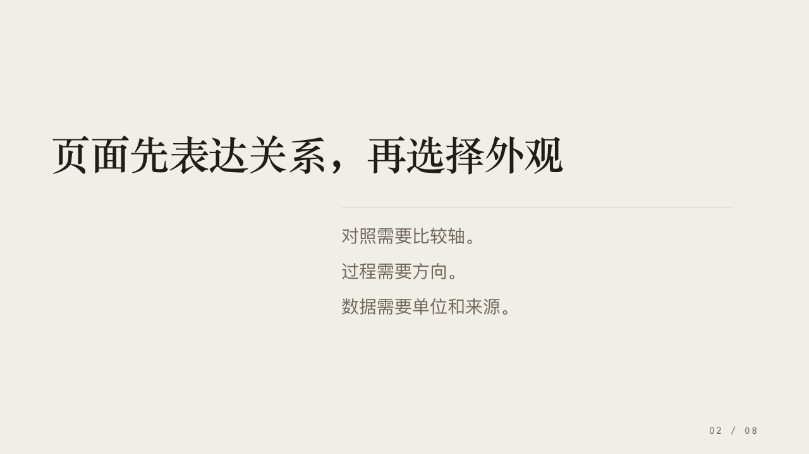
s02 修订后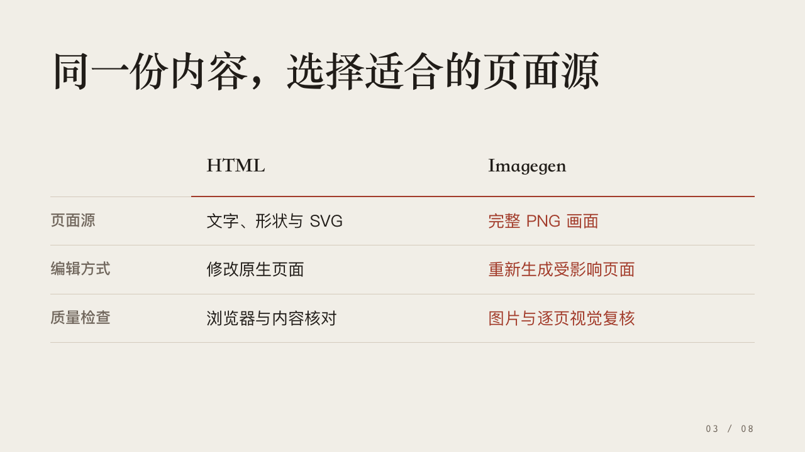
s03 修订前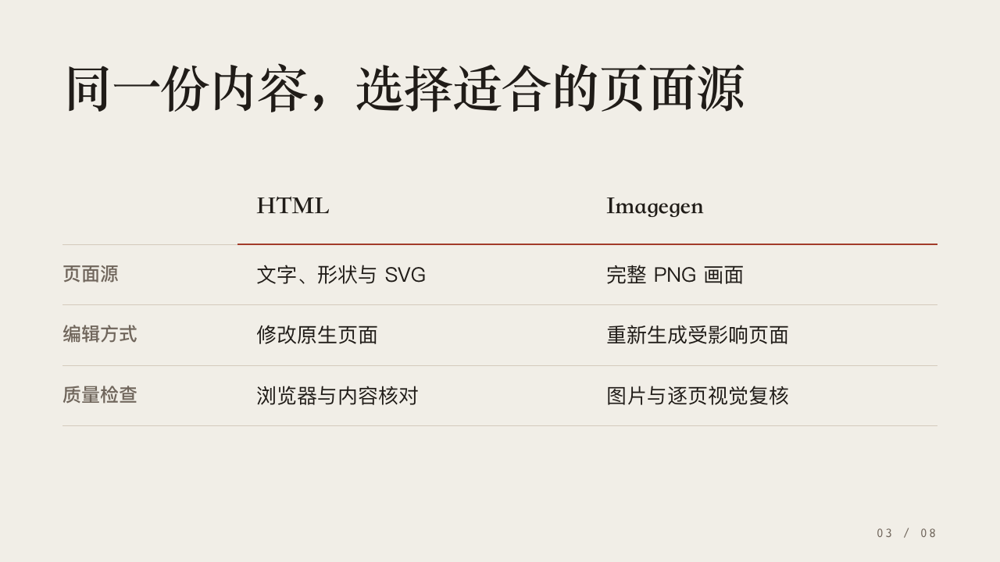
s03 修订后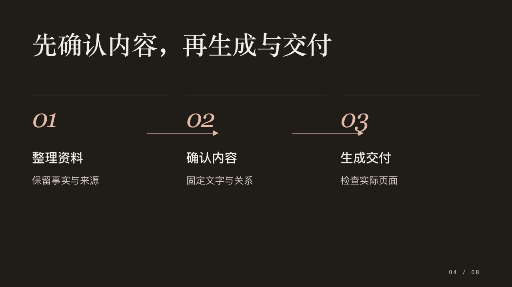
s04 修订前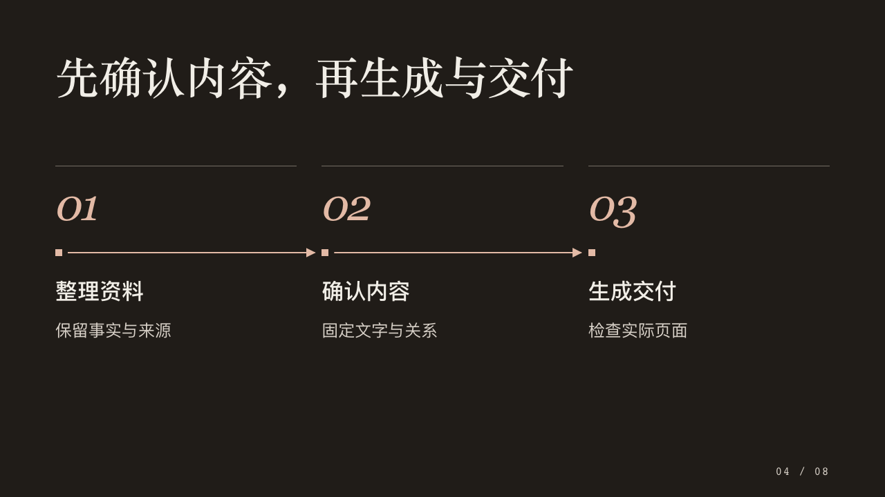
s04 修订后 s05 修订前
s05 修订前 s05 修订后
s05 修订后 s06 修订前
s06 修订前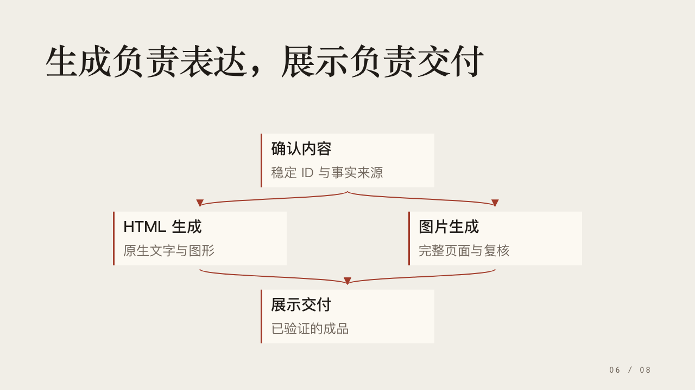
s06 修订后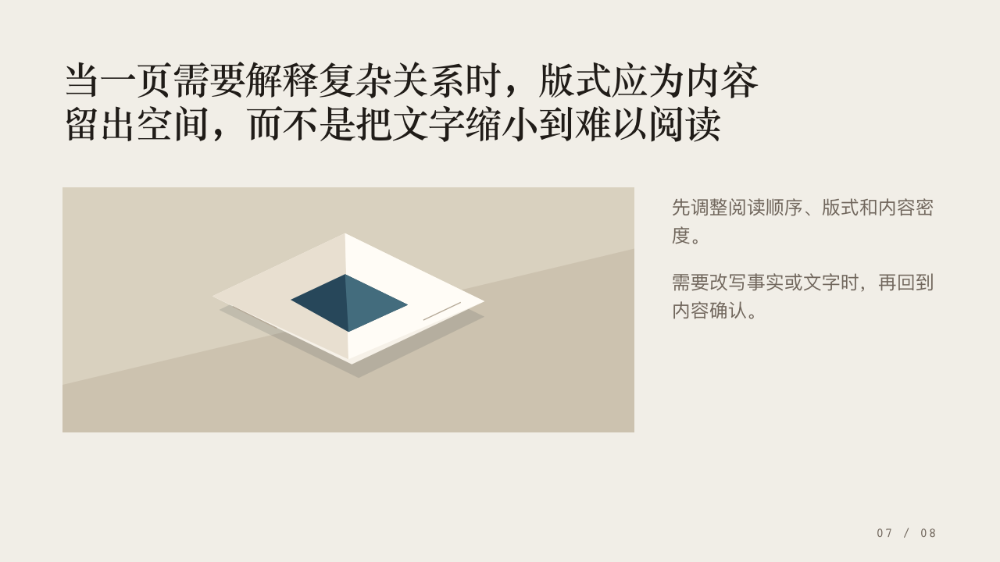
s07 修订前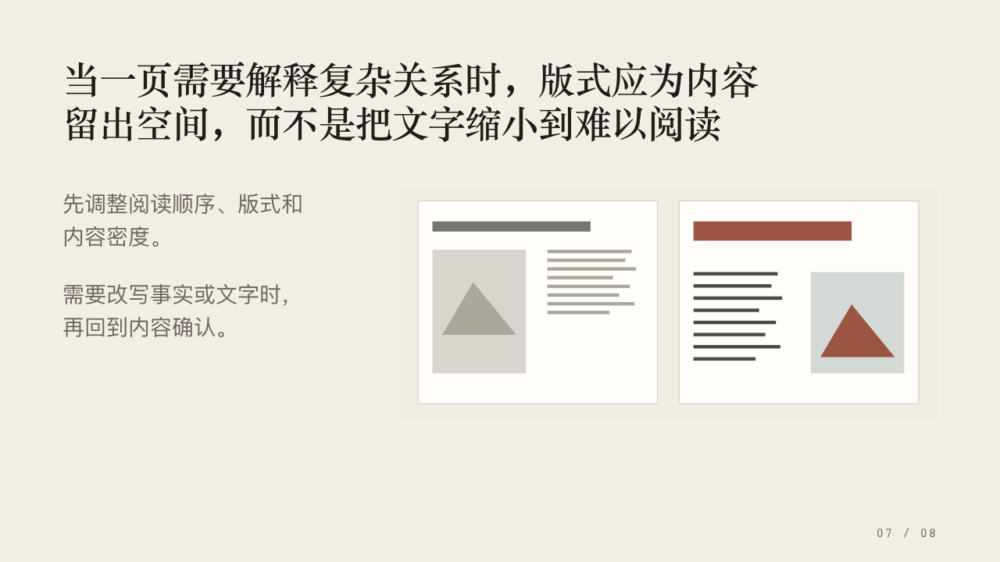
s07 修订后 s08 修订前
s08 修订前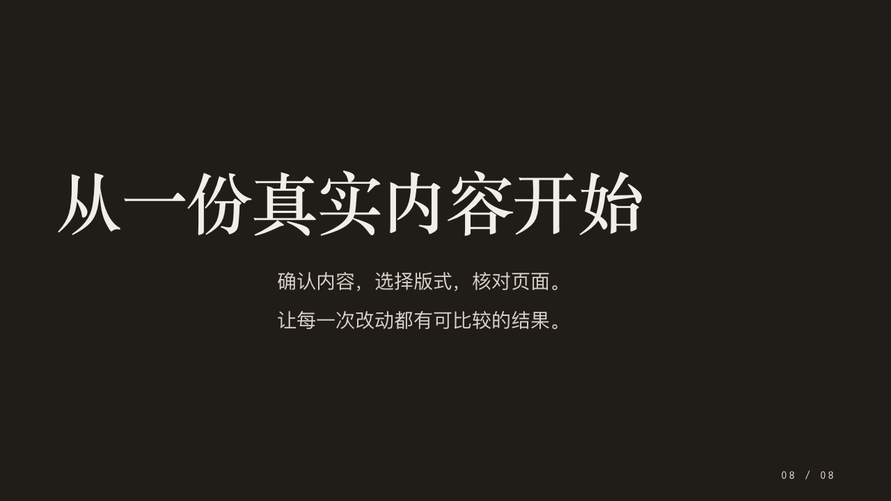
s08 修订后systems/ink-blue-grid
 s01 修订前
s01 修订前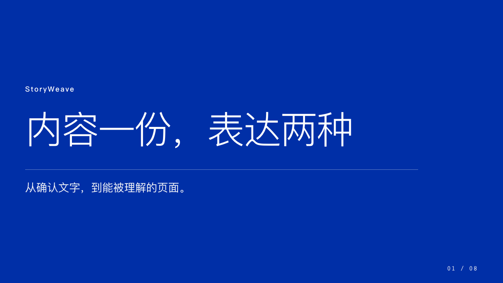
s01 修订后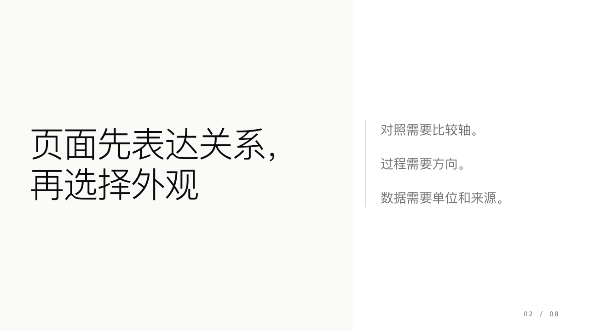
s02 修订前 s02 修订后
s02 修订后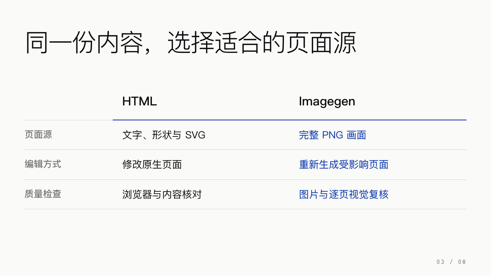
s03 修订前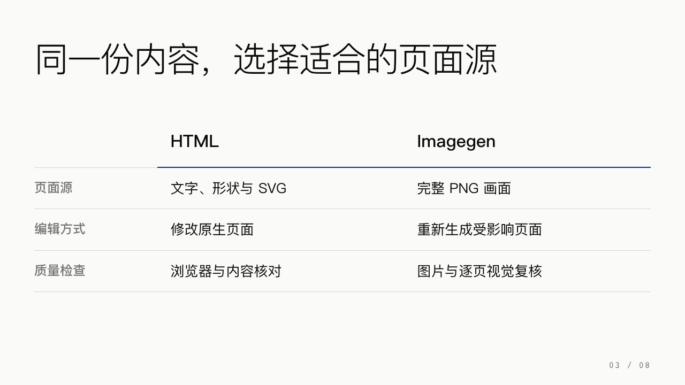
s03 修订后 s04 修订前
s04 修订前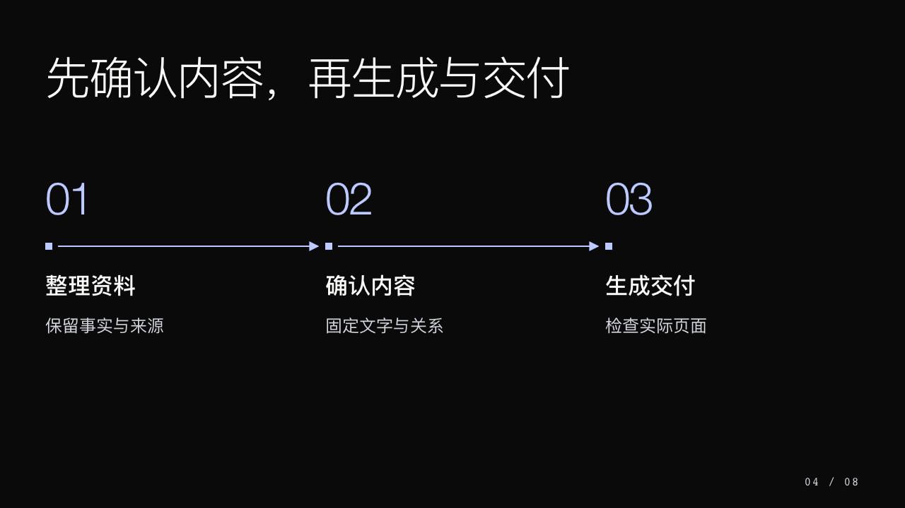
s04 修订后 s05 修订前
s05 修订前 s05 修订后
s05 修订后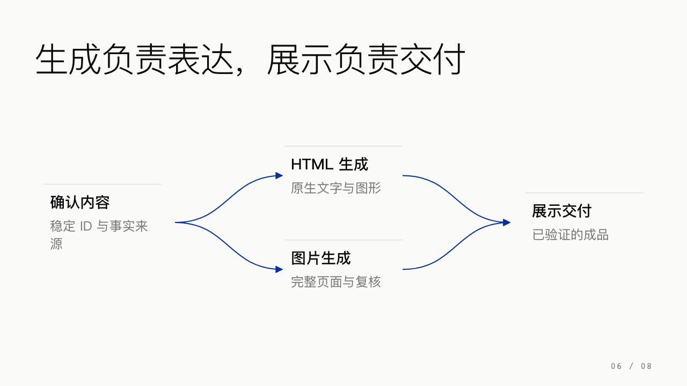
s06 修订前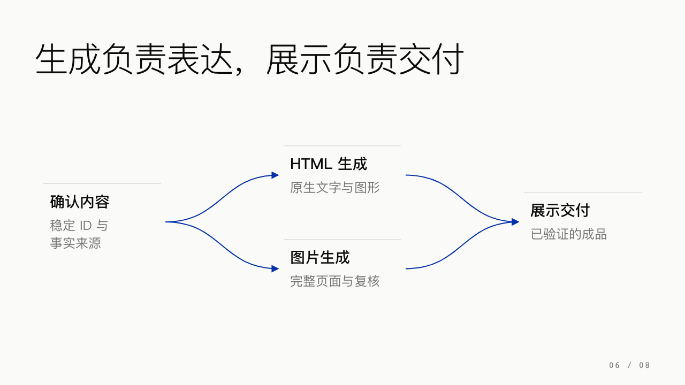
s06 修订后 s07 修订前
s07 修订前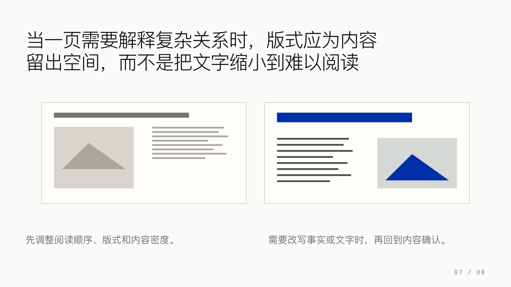
s07 修订后 s08 修订前
s08 修订前 s08 修订后
s08 修订后